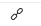
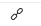

On IOS when I have a short draft open I would like to tap “Enable Links” quickly but the soft keyboard usually hides the “Enable Links” icon .
Is there a way to toggle the “Enable Links” mode without first dismissing the keyboard?
On IOS when I have a short draft open I would like to tap “Enable Links” quickly but the soft keyboard usually hides the “Enable Links” icon .
Is there a way to toggle the “Enable Links” mode without first dismissing the keyboard?
you could create a button for that into the extended keyboard row 
There are already actions in the directory which you could use:
Cool.
So, I
correct?
You set an action group to show as the extended row. So no binding per se, just load the appropriate action group for use in the row.
Don’t forget, this can change automatically when you change workspaces (if you have that set up), so you might want to add it to multiple groups.